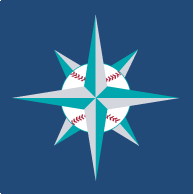

About Me
Hey! I'm Claire. I'm a recent graduate of the Computer Science program at the University of British Columbia. I'm primarily a front-end web developer with two co-op positions working client-side under my belt. I am eager to continue expanding my front-end skill set, while also gaining more practical experience in back-end and mobile app development as well. I am passionate about design and technology, and am excited to keep pace with the rapidly evolving tech world we live in today. In my spare time, you can find me keeping up with the Seahawks and especially the Mariners. Go M's!
